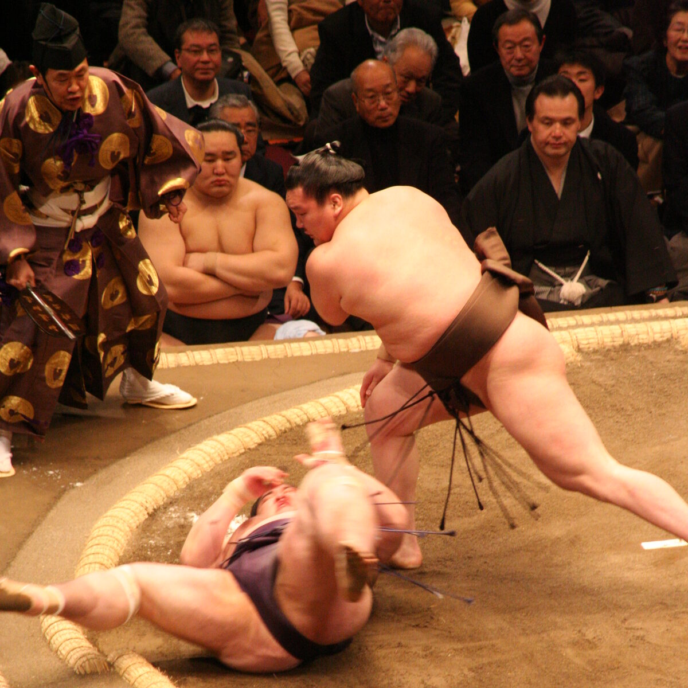
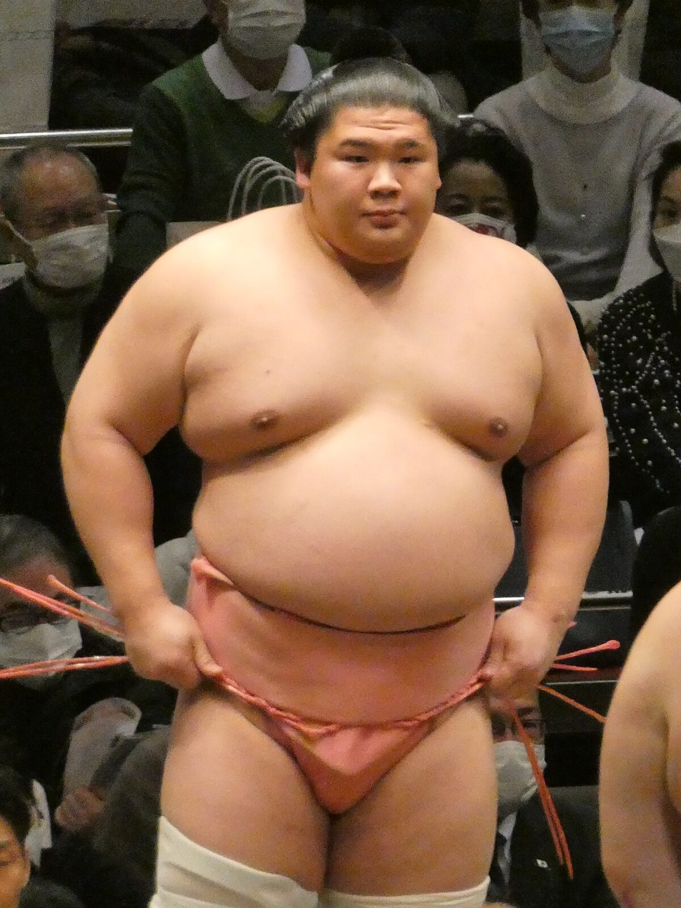

Sumo
I have a special interest in sumo. I am one of the few people producing sumo content in Turkish. I post about sumo on my X (formerly Twitter) account, @sumo_turk. This page is meant as a starting point for anyone watching sumo for the first time.
At a glance
- Ring
- A raised platform of clay (dohyō); the ring is 4.55 meters in diameter[2]
- Winner
- The wrestler who forces the opponent out of the ring, or makes the opponent touch the ground with any part of the body other than the soles of the feet[1]
- Weight classes
- None; a wrestler can face an opponent twice his own weight[1]
- Techniques
- 82 official winning techniques (kimarite)[3]
- Divisions
- Six divisions, with makuuchi at the top[1]
- Tournaments
- Six tournaments a year, 15 days each[11]
Rules
Two wrestlers (rikishi) meet in a ring on a raised platform of clay (dohyō). The ring is 4.55 meters in diameter.[2] The first wrestler to step out of the ring, or to touch the ground with any part of his body other than the soles of his feet, loses the bout.[1]
Sumo has no weight classes. A wrestler can face an opponent twice his own weight.[1]


A referee (gyōji) runs the bout inside the ring. Five judges (shimpan) sit around the ring. These five judges can dispute the gyōji's decision and call a conference (mono-ii). At the conference they confirm the decision, overturn it or order the bout to be fought again.[5]
The winning techniques are called kimarite. Since 2001, 82 techniques have been officially recognized. Five more situations are also recorded as wins, though they do not count as techniques.[3]
Some moves are forbidden (kinjite): striking with a closed fist, grabbing the hair, poking the eyes or the pit of the stomach with the fingers, striking both ears at once with the palms, grabbing or pulling the groin, grabbing the throat, kicking the chest or the waist, and bending the opponent's fingers back. A wrestler who does any of these is disqualified and loses the bout (hansoku). A wrestler whose belt (mawashi) comes undone loses the same way.[4]
Divisions
Professional sumo has six divisions. From the top down, they are:[1]
- MakuuchiThe top division. 42 wrestlers since 2004.[7]
- Jūryō28 wrestlers.[1] The first division that brings a salary and all the privileges.[8]
- Makushita120 wrestlers.[1]
- Sandanme160 wrestlers. It had 200 until March 2022 and 180 until January 2025.[6]
- JonidanNo fixed size; usually between 200 and 250 wrestlers.[6]
- JonokuchiThe lowest division; between 40 and 90 wrestlers.[6]
Wrestlers in the top two divisions are called sekitori. A sekitori fights one bout every day of a tournament, 15 bouts in 15 days. Wrestlers in the lower divisions fight seven bouts over a tournament.[1][8]
Ranks
Makuuchi is divided into five ranks. From the top down: yokozuna, ōzeki, sekiwake, komusubi and maegashira. The first four are called san'yaku.[1][7]
Finishing a tournament with a majority of wins is called kachi-koshi: at least 8 wins out of 15 bouts, or at least 4 out of seven. Kachi-koshi usually means moving up for the next tournament, and its opposite, make-koshi, means moving down.[8]
- YokozunaThe highest rank. To reach it, an ōzeki is expected to win two tournaments in a row or to achieve something equivalent.[1] The Yokozuna Deliberation Council recommends the promotion, and the board of directors of the Japan Sumo Association decides. A yokozuna is never demoted.[7]
- ŌzekiAn ōzeki who finishes a tournament with make-koshi becomes kadoban. If the next tournament also ends in make-koshi, he drops to sekiwake; if he then wins 10 bouts there, he returns to ōzeki. There is no fixed rule for promotion to this rank.[7]
- SekiwakeOne rank below ōzeki. An ōzeki with two make-koshi in a row drops to this rank.[7]
- KomusubiThe lowest of the san'yaku ranks.[1]
- MaegashiraEvery makuuchi wrestler outside san'yaku. They are numbered from the top down, from maegashira 1 to about maegashira 16 or 17.[1][7] A maegashira who beats a yokozuna earns a gold star (kinboshi). Each kinboshi raises the bonus the wrestler is paid for as long as he stays sekitori.[1][10]
Each rank has two sides: east and west. Within the same rank, east counts as one step above west; the list runs down east 1, west 1, east 2, west 2.[1][7]
The written form of this whole ranking is called the banzuke. A new banzuke is usually announced on the Monday 13 days before a tournament.[9]
Tournaments
Since 1958 there have been six official tournaments (honbasho) a year. Each one starts on a Sunday and lasts 15 days. Here is the calendar:[1][11]
- January · Hatsu BashoTokyo, Kokugikan
- March · Haru BashoOsaka; also known as Osaka Basho
- May · Natsu BashoTokyo, Kokugikan
- July · Nagoya BashoNagoya
- September · Aki BashoTokyo, Kokugikan
- November · Kyūshū BashoFukuoka
The wrestler who finishes the tournament with the most wins takes the championship (yūshō). The makuuchi champion receives the Emperor's Cup. If two wrestlers finish level on wins, a playoff bout decides it. If three are level, they fight in pairs until one of them wins two bouts in a row.[1][11]
Makuuchi wrestlers other than yokozuna and ōzeki who finish a tournament with kachi-koshi are in the running for three special prizes (sanshō): outstanding performance (shukun-shō), fighting spirit (kantō-shō) and technique (ginō-shō).[1][12]
Two wrestlers I have a soft spot for
Every wrestler belongs to a stable (heya). A stable is run by one or more coaches (oyakata).[15][16] I have a soft spot for Hakuhō and Ura.
Hakuhō Shō
He was born on 11 March 1985 in Ulaanbaatar, the capital of Mongolia. He wrestled for the Miyagino stable. He fought his first bout in March 2001 and became yokozuna in May 2007.[13]
He holds the record of 45 championships in the makuuchi division. 16 of them came without a single loss (zenshō yūshō), also a record. He also holds the records for most career wins (1,187) and most makuuchi wins (1,093).[13]
He retired in September 2021. He left the Japan Sumo Association in June 2025. In October 2026 he became head of the International Sumo Federation.[13]

Ura Kazuki
He was born on 22 June 1992 in Neyagawa, Osaka. He wrestles for the Kise stable. He mostly wrestles by pushing, but his bouts are acrobatic; he has won bouts with techniques such as izori, tasukizori and tsutaezori.[14]
In July 2017 he injured his right knee and dropped three divisions; in September 2018 he came back from the lower part of sandanme. In January 2019 he injured the same knee again. This time, in November 2019, he started over from the very bottom of jonidan, his lowest rank since his first tournament.[14]
In November 2021 he won the technique prize (ginō-shō). In January 2024 he reached the highest rank of his career, komusubi. As of November 2026 he has won three kinboshi: he beat Harumafuji in 2017, Terunofuji in 2022 and Hōshōryū in November 2026.[14]


References
- Sumo, English Wikipedia
- Dohyō, English Wikipedia
- Kimarite, English Wikipedia
- Kinjite, English Wikipedia
- Judge (sumo), English Wikipedia
- Professional sumo divisions, English Wikipedia
- Makuuchi, English Wikipedia
- Glossary of sumo terms, English Wikipedia
- Banzuke, English Wikipedia
- Kinboshi, English Wikipedia
- Honbasho, English Wikipedia
- Sanshō (sumo), English Wikipedia
- Hakuhō Shō, English Wikipedia
- Ura Kazuki, English Wikipedia; up to the November 2026 tournament
- Heya (sumo), English Wikipedia
- Toshiyori, English Wikipedia
- Sumo API, tournament results and banzuke; every time the page is opened
- Grand Tournament Schedule, Japan Sumo Association; the 2027 and 2028 calendar
Photos
- Hakuhō, January 2008: Hakuho fight Jan08.jpg, Eckhard Pecher, Wikimedia Commons, CC BY 3.0; cropped and resized
- Hakuhō, January 2012: Hakuho 2012 January.JPG, FourTildes, Wikimedia Commons, CC BY-SA 3.0; cropped and resized
- Ura, January 2022: Ura Kazuki20220115-1.jpg, TSUBAME98, Wikimedia Commons, CC BY-SA 4.0; cropped and resized